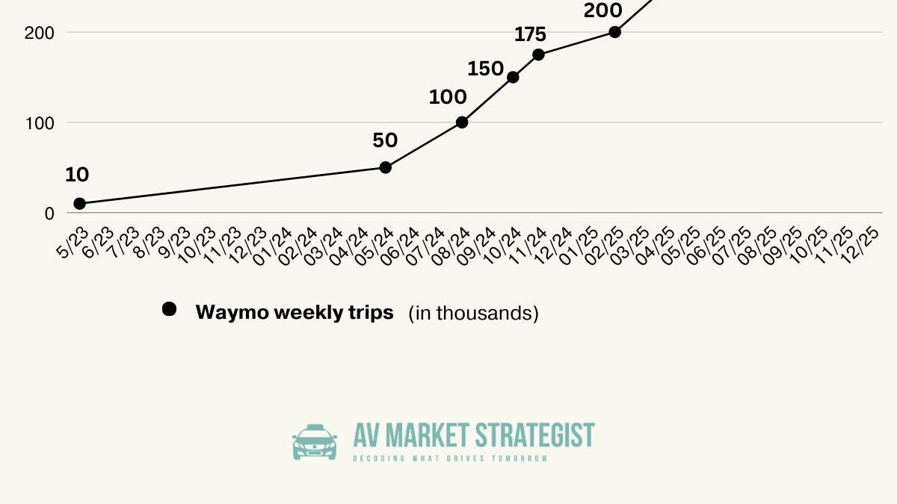

2025年は、Waymoにとって「ロボタクシーが本当にスケールした年」として記憶されるだろう。年初には週あたり約17万5千回だったライド数が、年末には45万回を超えた——157%の増加である。Waymoは2025年を通じて重要なマイルストーンを次々と達成した：2月に週20万回、4月には週25万回（月間100万回の初達成）、そして12月には週45万回。2025年の年間総トリップ数は1,400万回に達し、2024年の450万回の3倍となった。生涯ライド数は年末までに2,000万回を超える見通しだ。
最も成熟した市場であるフェニックスは、315平方マイルまで拡大した。11月には時速65マイルまでのフリーウェイ走行を開始し、10月にはDoorDashとの配送パートナーシップを締結した。
2025年最も劇的な拡大を遂げた市場で、55平方マイルから260平方マイル超へと成長した。3月にはシリコンバレーに戻り、11月にはサンフランシスコとペニンシュラゾーンを統合し、Highway 101とInterstates 280でのフリーウェイ走行を開始した。サンノゼ空港では24時間365日の路肩サービスを開始し、SFO（サンフランシスコ国際空港）では12月に従業員向け完全自律走行ライドが始まった。
79平方マイルから120平方マイル超に拡大し、6月にはエコーパーク、シルバーレイク、ブレントウッド、ビバリーヒルズ拡張を実施した。11月にはI-10、I-110、I-405、Route 90でのフリーウェイ走行を開始した。
2025年の最初の大型展開地として、Uberとのパートナーシップのもとサウス・バイ・サウスウェストに合わせた3月に37平方マイルでサービスを開始し、7月には90平方マイルに拡大した。
5番目の営業市場となり、6月にUber経由でダウンタウンと周辺地域65平方マイルで一般公開された。
Waymoはマイアミ、ダラス、ヒューストン、サンアントニオ、オーランドでの完全自律テスト（安全ドライバーなし）を開始し、いずれも2026年の商業展開を目標としている。展開速度は劇的に加速しており、ダラスでは発表から無人テスト開始までわずか4か月という、初期市場で数年を要したタイムラインとは比べものにならない速さを実現した。
今後の展開が予定されている都市には、ワシントンD.C.、ニューヨーク市、デトロイト、ラスベガス、ミネアポリス、ニューオーリンズ、タンパ、フィラデルフィア、ピッツバーグ、ボルチモア、セントルイスが含まれる。国際展開としては東京とロンドンが計画されている。カリフォルニア州DMVは南カリフォルニアのほぼ全域、ベイエリア全域、サクラメントでの運転を承認した。
フリート規模は4月の約1,500台から11月には2,500台に成長した。Jaguar I-PACEの生産は終了したが、WaymoはMagnaとのパートナーシップによりアリゾナ州メサの施設で2,000台以上を追加改造中で、2026年末までに3,500台超のジャガーを目指している。新プラットフォームとしては、I-PACEよりコスト低減を実現したZeekr RT（専用ロボタクシー）とHyundai IONIQ 5が加わった。
Bloombergによると、2025年12月時点の年換算収益は3億5,000万ドルとなった。Waymoは1,000億〜1,100億ドルの評価額をターゲットに150億ドル超の新規資金調達交渉を進めており、2024年10月のシリーズC評価額450億ドルから2倍以上に成長している。
2025年7月、Waymoは完全自律走行1億マイルを達成した。これは2024年末の5,000万マイルから倍増したもので、年末には週200万マイル以上を自律走行で走行している。